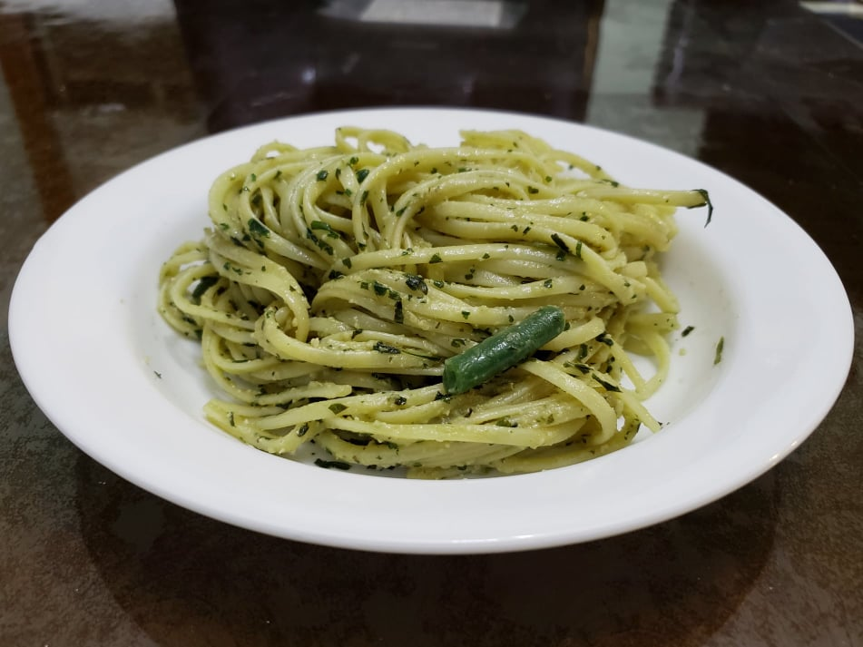

Trenette al Pesto

Ingredients:
Pesto:
- 30 g Basil leaves
- 30 g Pine nuts, lightly toasted
- 1 clove Garlic
- 1 tsp Salt
- 10 g Pecorino, grated
- 20 g Parmesan, grated
- 80 ml or 1/3 cup Olive oil
Pasta:
- 1 lb Dried trenette pasta, or substitute Dried linguini
- 1 tbsp Salt
- 300 g Golden potatoes, peeled, cut into 1" pieces
- 150 g Green beans, ends trimmed, cut into 1" pieces
Instructions:
- Place the pine nuts, salt and garlic into a food processor and blend until the nuts are finely chopped. Add the basil leaves and the cheeses. Blend while slowly adding in the olive oil until smooth.
- Bring a large pot of water to boil. Add the kosher salt to season the water. Prepare the potatoes and greens beans while the water comes to a boil.
- Add the potatoes to the water. After 4 minutes add in the pasta. About 4 minutes before the pasta is the desired level of doneness, add in the green beans.
- Drain the pasta, reserving 1 cup of pasta water.
- Add the pesto, pasta, potatoes, green beans, and 1/4 cup pasta water to a large mixing bowl. Toss to combine completely, adding more pasta water if needed.
- Serve warm with an extra drizzle of olive oil if desired.